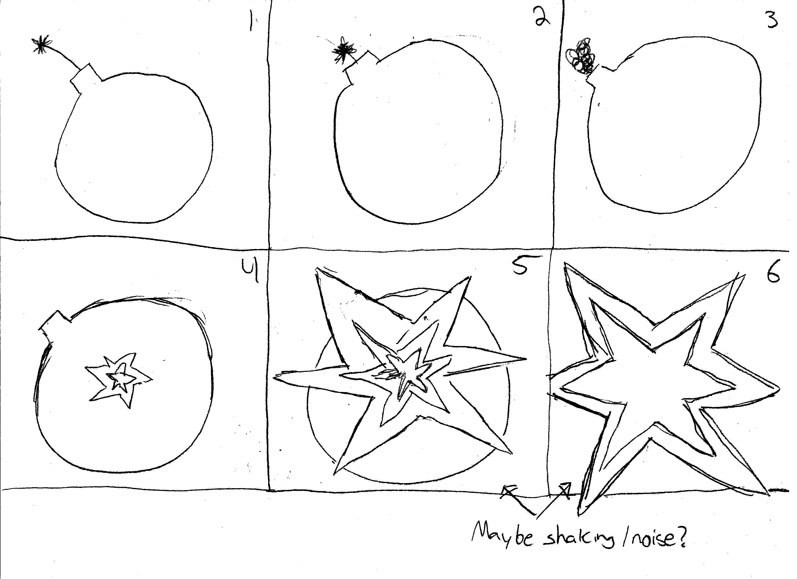

Week Navigator
Week Navigator
Don't do it, just refresh the page...
Week Navigator
Week 2
Week 3
Week 4
Week 5
Week 6
Week 7
Week 8
Week 9
Project
ART 321 Week Navigator 1.0
| Week 2 | Week 3 | Week 4 |
| Week 5 | Week 6 | Week 7 |
| Week 8 | Week 9 | Week 10 |
Week 2

Since my interests lie with various aspects of computers, I figured it would be a neat challenge to try and create a web presence that mimics that of a more classical windows environment. This is half because I was having troubles thinking of another topic to build a site on, and half because I really wanted to see the reactions of those who once had to deal with such a fine operating system.
Before you ask why, I would counter with why not? Who doesn't want a taste of the nostalgic horror that is the default teal background, and off white windows. Bringing back that feeling of having to be told when it is safe to shut down (Go ahead try it) your computer was the goal of this project
All code was custom written for this project and through thorough study of the Windows 98 interface. All images/sounds are owned by the respective trademarks.
Week 3

The first image has a subjective "best" threshold value depending on what features of Oreo we want to focus on. I ended up landing on a value of 85 to produce this image that accentuates Oreo's features. The alternative is we could have adjusted the threshold value so the lighter parts of Oreo and the window were more discernible, but again that is subject to the viewers liking.

Unlike the first image, this seemingly black box has a very objective best threshold value (unless your goal is to ignore the information in the picture) and that value is 1. Why? Because for any other value the text is not visible.

This thresholded image is the result of applying a threshold value of 115 to the image. I chose this value because it offers a balance of clarity, and removal of the background. I would argue that there is no single "best" threshold value, as applying more of a threshold value would result in the text starting to disappear, becoming harder to read, and applying less would make the background (folds in the paper) more visible. There's a trade off between clarity and quality that is subject to the viewers liking.


The above image was constructed by picking colors with the same intensity/lightness value. The image below is after applying a Image > Mode > Greyscale in photoshop. As we can see, because of the similar light intensity values, when converted to grey values the circles disappear as the colors are treated as the same.


I included 2 images above so it is easier to contrast the difference that sharpening the image makes. The first is the original, the second is after doing a smart sharpen on the image. What we can see vs. the original is that the discolored pixels as a result of the jpg encoding become less apparent, and the white space between the bars on the sheet music become clearer, as well as the lines becoming darker and more defined. But with more and more passes with start to lose quality, as the black pixels from the bars on the sheet music start to disappear, and imperfections on the sheet start to show more, resulting in a spotty image and lower image quality overall.
Week 4
This will be done by scraping the newest trending words each day from https://www.urbandictionary.com using a Python bot and storing them into a database along with their accompanying definition after repeats and date oriented definitions are removed. This is due to the fact that after investigation of the trending words there's usually multiple "October 10" definitions in the trending page.
When a user enters the page they will be greeted by a blank page with the ability to "enter" the game, at this point their location (via IP or browser location statistics) is gathered.

The screen fades out to present the main screen

The main screen is presented to the viewer

Once entered, the user is part of a 'global' game. Once a player is ready to draw, they can click the "Draw Now!" button to start a drawing session, or can look through the drawings of others to try and guess them.
After clicking the Draw button the system then grabs one of the words scraped from the Urban Dictionary and asks them to draw it preferably allowing two input methods, either the user can draw it with their mouse or upload a hand drawn image from their computer.

If the user instead selects an image to guess instead they are brought to the guess screen where they are presented with the location of the artist, the artists success rating, and the image itself.

Successful guesses increment the "Successful guesses" for a specific image and increase the artists score by a proportion based on successful guesses vs. wrong guesses.
Week 5
The sketch presented above was my first idea for the explosion animation, but when actually trying to implement this design I realized not only would it be very difficult given my little to no ability in drawing/animation, it also didn't have a source for the explosion. Realizing this, I came up with a simpler, more clear animation that featured a bomb exploding, as you can see in the second sketch below.
This second design would be much easier to implement from a non-artist standpoint, allowing the use of simple shapes and frame-by-frame animation to implement for a non-professional. It features the black bomb with a fuse that runs down over the first few frames, then explodes outwards from the middle of the bomb with some extra screen shake to try and simulate the "force" of the explosion. The sketch shows 6 frames, however the finished animation is actually made up of 17 different frames.
Here is the finished 17 frame animation, each frame exists on the screen for 75.0 milliseconds, resulting in an animation length of 1.275 seconds. I chose this number because it not only makes the animation appear a bit smoother, but also hides some of the imperfections in the later frames.
Here we can see each frame by itself, showing how I made the explosion animation by creating each frame as a separate PSD then combining them all in a different program. Photoshop has the ability to make an animation by using each layer as a frame, however this goes against how I would usually use photoshop layers to distinguish between objects, so I went with this route. Each of the frames consists of roughly 4 objects/layers: The bomb, The outer explosion, The inner explosion, and depending on the frame either the fuse, or the white space inside the explosion.
Week 6
Week 7
Week 8
Week 9
It keeps the story and narrative simple and easy to follow by not allowing too many unnecessary actions to take from the story the player is meant to follow. During the time I spent playing the game I went out of my way to try and interact with other elements of the environemnt (people, doors, sinks, etc.) but none seemed to do anything besides the objects you are meant to interact with from a story perspective.Because of this Gravity Bone appears less like a game to me, and more like a story that the player is meant to follow, not allowing them to make their own choices and instead following the set path the developer intended them to follow.
The artistic style and graphical quality of the game was cute and lighthearted, pointing me to more of a blocky minecraft feel. To my surprise it was actually made on the same engine as Quake II, a game with a far darker atmosphere and less cheery vibe. The way they chose to present the story from a graphical standpoint was definitely humorous, the missions you received appeared almost comical in the way they are given, however the change from level 1 to level 2 was an important one I believe the developers intended to engage the player with. Whereas the first level is bright, cheery, and in a party atmosphere, the second level is dark, provides real consequence for bad gameplay (multiple ways to fail) and this darker atmosphere really helps build up to the conclusion of the player being shot at the end of the level.
The restriction of the players ability to interact with the environment leaves very few choices that the player has to make themselves. This linear playstyle, as stated before points me to considering Gravity Bone as less of a game, and more of a story presented in a 3D world. The choices the player makes are those the developer forces the player to make in order to progress further in the story, so instead of an RPG like game where the player has a part in creating the story, it's more as if the player is watching the story unfold - similar to a movie.
I know nothing else is required past here but this was actually a really interesting assignment, I've never truly thought of breaking down a game into its individual choices like this, it makes the developers thinking strategy much more clear to me as a player, and the game itself was a hoot and a wonderful throwback to simpler times!
Final Project
The game is split into 2 separate "problems", an explanation on how to complete both is below, along with a few skips that I implemented to make testing/presenting easier.
Problem 1 is more difficult than the rest of the game and requires some knowledge of javascript, or at least the ability to manipulate variables in the web console. To solve this problem the player must open the web console after starting the game, and change the 'dimensions' variable to 2. Initially the hints I gave in the games interface were much more vague but after discovering nobody could solve this problem I made them a lot more obvious.
Problem 2 is a set of 3 separate problems (to unlock the X-Y-Z plane) that are in the directions left, up, and right. To the bottom is the end of the game, which will be unlockable after completing all 3 challenges.
The left problem is a simple problem of addition, the figure asks you to take the sum of two, by that it is expected that the user would talk to the figure twice, noting the number of hums each time, adding them together, then typing that number into their keyboard. There is no input box, the game simply checks for the sequence being correct.
The problem on the top end of the screen is a Simon Says/DDR clone, requiring the user to use their arrow keys to follow the pattern the computer randomly generates. This has to be completed 3 times, each time a little more difficult than the last.
The most straight forward of all the problems, it's simply a maze that the player must navigate, and upon reaching the end, interact with the pad to complete the challenge.
For the ease of presenting/testing I implemented two skips/cheats. During problem 1 you can press "End" at any point on the keyboard to skip to problem 2. During problem 2 pressing "Insert" automatically completes the DDR (top) problem.
Windows 98
Week Navigator |
Week 2 |
 Personal Webspace |
 Inspiration... |
 Shut Down... |
{kind=link}
{kind=link}
{kind=link}
{kind=link}
{kind=link}
{kind=link}
{kind=link}
{kind=link}
{kind=link}
{kind=link}
{kind=link}
{kind=link}
{kind=link}
{kind=link}
{kind=link}
{kind=link}
{kind=link}
{kind=link}
{kind=link}
{kind=link}
{kind=link}
{kind=link}
{kind=link}
{kind=link}
{kind=link}
{kind=link}